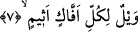
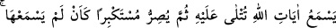
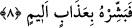

günü Allah bu kişi için meleklerine: “Bakın bakalım bugün bu kulumun kurtuluşuna
vesile olacak bir iyiliği var mıdır?” buyurur. Melekler: “Ya Rabbi! Yüzük kaşına yazılı
olan “lâ ilâhe illallah” sözünden başka bir şey bulamadık” derler. Allah Teâlâ; “Kulumu
cennete alınız, ben onu affettim” buyurur.
7. Vay haline, her yalancı ve günahkâr kişinin!
“Her yalancı, günâh yüklü kimseye yazıklar olsun!”. Bu, azap kelimesidir. Oldukça
çetin bir azap demektir. “Effâk”, “ziyade yalancı” demektir. “Efek”; olması gerekli olan
cihetten döndürülmüş şey demektir. “Alîm” kelimesinin “çok bilgili” mânâsında olması
gibi bu “esîm” kelimesi de “çok günahkâr” mânâsında mübâlağa sîgasıdır.
8. O, Allah’ın kendisine okunan âyetlerini işitir de sonra büyüklük taslayarak
sanki hiç onları duymamış gibi (küfründe) direnir. İşte onu acı bir azap ile müjdele!
“O, Allah’ın kendisine okunan âyetlerini işitir”. Bu ifâde “effâk” kelimesinin başka
bir sıfatıdır. Burada Allah’ın âyetlerinden murad edilen, Kur’an âyetleridir. Çünkü
ancak bunlar duyulur. “Ona okunur”dan maksad, “Allah’ın âyetleri”nin “hal”i olmasıdır.
Yâni “Allah’ın âyetleri kendisine okunduğu halde” demektir. Israr etmek; küfürde dâim
olup azim ve kararlılık göstermektir.
Müfredât kitabında şöyle denilmiştir: “Israr etmek”, “günahta azimli, kararlı, katı
tutumlu olup günahtan kopmamak”tır. Kelimenin aslı “sarr” kökünden olup “şiddet”
mânâsındadır. “Surra”, “kese ve cüzdan” demektir. İşitmiş olduğu Allah’ın âyetlerine
îmân etmekten ve hakkın konuştuğuna boyun eğmekten onları küçümseyip kendi
bâtıllarını beğenerek kibre düşmektir. Bu kişi, Nadr b. Hâris b. Abdüddâr’dır. Bu kişi
ceza olarak hapsedilip ölene kadar mahkûm edilmiştir. Bu kişi Rüstem ve İsfendiyar
roman ve masallarını satın alır, insanları bunlarla meşgul ederek onları Kur’ân
dinlemekten alıkoyardı. İşte bu âyet-i kerîme buna ve bunun gibi şer ve fesad
bezirgânlarına bir tenkid ve tehdid olarak nazil olmuştur. İşte bu genelleme, pek
kapsamlı bir mânâ ifâde eden “kül” kelimesinden dolayıdır. “Sümme” kelimesi ise
boyunların bükülüp gönüllerin tam bir yatkınlıkla teslim olacağı Allah’ın âyetlerinin
duyulmasından sonra hala kabul etmemekte ısrar ve kibr etmeyi yermek ve yadsımak
içindir. Sonuç itibarıyla hakikî mânâya hamledilmesi mümkün olmakla birlikte ısrar